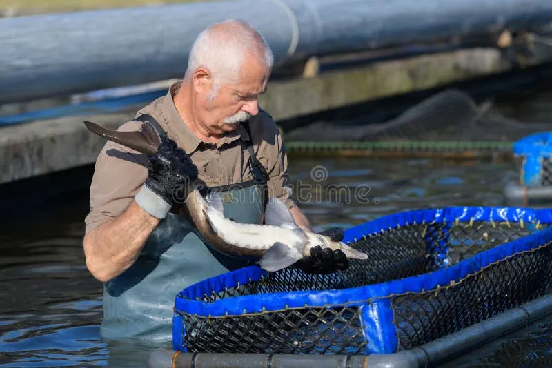
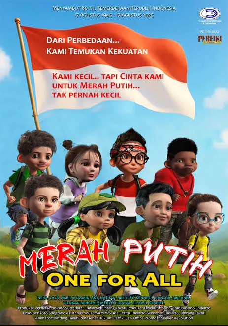

Matematika itu mudah dan menyenangkan. Iya kan?
Komunitas Yang Disarankan


Teknologi Informasi
Forum untuk saling berbagi informasi serta saling tukar pikiran seputar dunia Teknologi Informasi


Pecinta Alam
Saling berbagi foto keindahan alam
Gamer Sejati
Ngobrolin game seru

Budidaya Ikan Lele
Belajar dan saling share pengalaman merawat lele.
Keanggotaan
Untarian 2024
2.204 AnggotaKomunitas PHP Indonesia
56.4rb Anggota
World Cup 2026
200JT Anggota

Pecinta Film Indonesia
1 AnggotaPostingan Komunitas Teratas
Jerome Polin
20 jam yang lalu